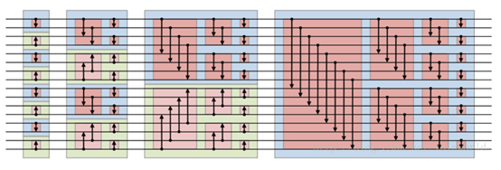
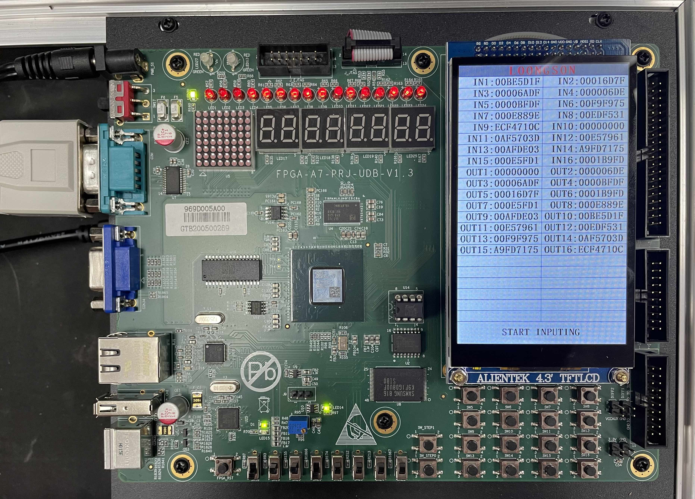
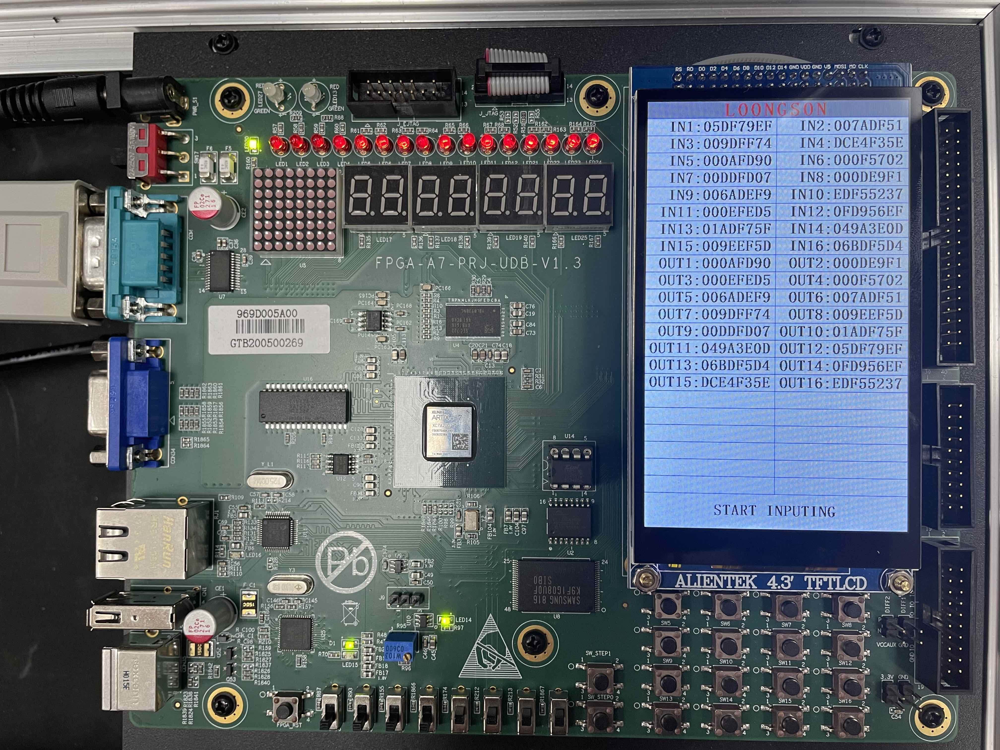

使用Verilog语言设计一个对16个32位无符号数进行排序的模块。
项目已开源，点击此处查看
项目简述
项目环境与描述方式
设计语言： Verilog硬件描述语言
开发环境： Vivado 2019.2
测试环境： LS-CPU-EXB-002实验箱，搭载Xilinx Artix-7 xc7a200tfbg676-2
描述方式： 结构化描述方式
设计目标
采用Verilog语言描述一个对16个32位无符号数排序的运算电路。
实现情况
采用双调排序算法，不同模块间并行计算的策略，实现了对输入的16个32位无序无符号数进行排序，并按升序输出的功能。
此电路在Vivado和本地FPGA开发板上均调试运行成功。
实现细节
算法思想
双调序列（Bitonic Sequence）是指由一个非严格增序列X和非严格减序列Y（其中X的最小元素正好是Y的最大元素）构成的序列。
定义: 一个序列a1,a2,…,an是双调序列（Bitonic Sequence），如果:
1.存在一个ak(1≤k≤n),使得a1≥…≥ak≤…≤an成立；或者
2.序列能够循环移位满足条件（1）
简单来说，双调序列是一个先单调递增后单调递减（或者先单调递减后单调递增）的序列。
而双调的归并网络是基于Batcher定理而构建的。
Batcher定理是说将任意一个长为2n的双调序列A分为等长的两半X和Y，将X中的元素与Y中的元素一一按原序比较，即 a[i]与 a [i + n]( i ≤ n )比较，将较大者放入MAX序列，较小者放入MIN序列。则得到的MAX和MIN序列仍然是双调序列，并且MAX序列中的任意一个元素不小于MIN序列中的任意一个元素。再分别对得到的所有MAX和MIN序列进行上述的重复操作，不断缩小序列的规模，直至所有MAX和MIN序列的规模数为2。对于最后得到的每个小序列b[i]而言，满足max(b[i])<=min(b[i+1])，从而实现了整体序列内部元素的有序排列。
因此，对于16个元素，我们可以使用以下步骤实现升序排序：
- 相邻两个元素，两两之间进行比较，合并形成8个单调性相反的单调序列；
- 对8个单调序列，两两合并，形成4个双调序列，分别按相反单调性排序，得到4个单调性相反的双调序列；
- 对4个长度为4的相反单调性单调序列，相邻之间合并，生成两个长度为8的双调序列，分别按相反单调性排序；
- 对2个长度为8的相反单调性单调序列，相邻之间合并，生成1个长度为16的双调序列，升序排序。
示意图

明细表
模块明细表
| 模块名 | 模块输入 | 模块输出 | 描述 |
|---|---|---|---|
| TestInboard | * | * | 实验箱调试使用 |
| Sorting_16 | 16个32位数（乱序） | 16个32位数（升序） | 顶层模块，调用多个子模块以进行排序 |
| Bitonic_Sequence_4 | 16个32位数（乱序） | 4组长度为4的双调序列 | 将16个数分为4组长度为4的双调序列供后续模块使用 |
| Bitonic_Sequence_8 | 4组长度为4的双调序列 | 2组长度为8的双调序列 | 将4组长度为4的双调序列分为2组长度为8的双调序列供后续模块使用 |
| Bitonic_Sequence_16 | 2组长度为8的双调序列 | 1组长度为16的双调序列 | 将2组长度为8的双调序列分为1组长度为16的双调序列供后续模块使用 |
| ascendingSort_4 | 1组长度为4的双调序列 | 4个32位数（升序） | 将长度为4的双调序列转换为升序序列 |
| ascendingSort_8 | 1组长度为8的双调序列 | 8个32位数（升序） | 将长度为8的双调序列转换为升序序列 |
| ascendingSort_16 | 1组长度为16的双调序列 | 16个32位数（升序） | 将长度为16的双调序列转换为升序序列 |
| Swap | 2个长度为32的数 | 按大小将两数输出 | 2个32位数的大小比较模块 |
| Comparator_2bit | 2个2位数 | 三种大小比较结果（大于、等于、小于） | 2个2位数的大小比较模块 |
| Comparator_4bit | 2个4位数 | 三种大小比较结果（大于、等于、小于） | 2个4位数的大小比较模块 |
| Comparator_16bit | 2个16位数 | 三种大小比较结果（大于、等于、小于） | 2个16位数的大小比较模块 |
| Comparator_32bit | 2个32位数 | 三种大小比较结果（大于、等于、小于 | 2个32位数的大小比较模块 |
| And_32bit | 1个32位数,1个1位数 | 1个32位数 | 根据一位使能信号决定32位数输出与否 |
| Or_3_32bit | 3个32位数 | 1个32位数 | 将三种比较结果中使能信号为真的数据输出 |
文件明细表
| 文件名 | 包含模块 | 描述 |
|---|---|---|
| Sorting_Lcd_Module.v | Sorting_16, lcd_module | 含lcd的顶层模块 |
| Swap_Module.v | Swap | 数据交换 |
| Sorting_Module.v | Sorting_16 | 排序顶层模块 |
| Logic_Module.v | And_32bit, Or_3_32bit | 逻辑门模块，供最终输出使用 |
| Comparator_Module.v | Comparator_2bit, Comparator_4bit, Comparator_16bit, Comparator_32bit | 数据大小比较模块 |
| Bitonic_Sequence_Module.v | Bitonic_Sequence_4, Bitonic_Sequence_8, Bitonic_Sequence_16 | 双调序列生成模块 |
| ascendingSort_Module.v | ascendingSort_4, ascendingSort_8, ascendingSort_16 | 升序序列生成模块 |
| lcd_module.dcp | 实验资料自带 | lcd模块 |
上板测试结果


- Post title：基于Vivado的32位无符号数排序模块
- Post author：XieTao
- Create time：2021-12-06 13:34:42
- Post link：https://xietao.site/sortingmodule.html
- Copyright Notice：All articles in this blog are licensed under BY-NC-SA unless stating additionally.